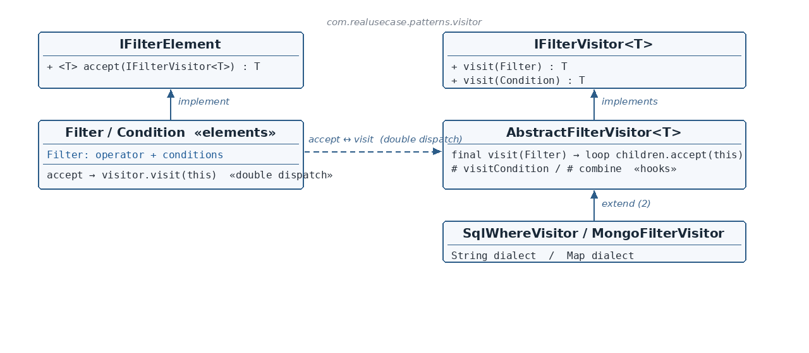

The two contracts
☕ 4 min read · 🎬 Video walkthrough · 📊 UML diagram · 💻 Runnable code
⚡ In a nutshell — Represent an operation to be performed on the elements of an object structure without changing the element classes.
Represent an operation to be performed on the elements of an object structure without changing the element classes. Visitor's engine is double dispatch: the element's accept(visitor) calls back visitor.visit(this), so the executed code depends on both the element type and the visitor type — with no instanceof chains anywhere.
Add a new operation = add a new visitor class. The elements never change.
Data-access layers hold one filter model — age > 18 AND country = IN — that must render into multiple target dialects: a SQL WHERE string for one store, a Mongo filter document for another. Baking toSql() and toMongo() into the filter classes bloats them with every new dialect. The production fix is Visitor: the filter tree stays pure data with one accept method, and each dialect is its own visitor (SqlWhereVisitor, MongoFilterVisitor). New dialect → new visitor class, filter model untouched.
IFilterElement is the Element contract: <T> T accept(IFilterVisitor<T> visitor) — generic, so visitors can produce any result type.Filter (an operator + conditions) and Condition (field/op/value) are the concrete elements; each accept is one line: return visitor.visit(this); — the double-dispatch callback.IFilterVisitor<T> has one overloaded visit per element type.AbstractFilterVisitor<T> implements the shared traversal once (final visit(Filter) loops children through accept), deferring only per-dialect rendering to hooks (visitCondition, combine).SqlWhereVisitor renders T = String; MongoFilterVisitor renders T = Map — same tree, two dialects.
Reading the diagram: the left side is the element hierarchy (pure data + accept); the right side is the visitor hierarchy (one visit overload per element). The dashed arrow is the double-dispatch handshake between them.
IFilterElement — Element contract — generic accept.Filter / Condition — Concrete elements — data + one-line accept callbacks.IFilterVisitor<T> — Visitor contract — visit(Filter) / visit(Condition).AbstractFilterVisitor<T> — Shared traversal (Template Method inside Visitor) — hooks: visitCondition, combine.SqlWhereVisitor / MongoFilterVisitor — Concrete visitors — String dialect / Map dialect.VisitorDesignPattern — Client — one tree, two visitors, two renderings.public interface IFilterElement {
<T> T accept(IFilterVisitor<T> visitor);
}
public interface IFilterVisitor<T> {
T visit(Filter filter);
T visit(Condition condition);
}
accept is generic in T — the same elements can be rendered to a String by one visitor and a Map by another.instanceof: Java's overload resolution does it at the visit(this) call site, where the concrete type is statically known.public class Condition implements IFilterElement {
private final String field, operator, value; // + getters
@Override
public <T> T accept(IFilterVisitor<T> visitor) {
return visitor.visit(this); // <- dispatch #2: overload for Condition
}
}
Filter holds logicalOperator + a list of Conditions and has the identical one-line accept. This line is the whole trick: dispatch #1 picks the element's accept (virtual call); dispatch #2 picks the visitor's overload for this's concrete type. Both element and visitor type participate — double dispatch.AbstractFilterVisitor<T> — shared traversal, per-dialect hookspublic abstract class AbstractFilterVisitor<T> implements IFilterVisitor<T> {
@Override
public final T visit(Filter filter) {
List<T> parts = new ArrayList<>();
for (Condition condition : filter.getConditions()) {
parts.add(condition.accept(this)); // re-enter double dispatch per child
}
return combine(filter.getLogicalOperator(), parts);
}
@Override
public final T visit(Condition condition) {
return visitCondition(condition);
}
protected abstract T visitCondition(Condition condition);
protected abstract T combine(String logicalOperator, List<T> parts);
}
final, for all dialects — a Template Method embedded inside the Visitor. Concrete visitors implement only the two rendering hooks.// SQL: T = String
protected String visitCondition(Condition c) { return c.getField() + " " + c.getOperator() + " '" + c.getValue() + "'"; }
protected String combine(String op, List<String> parts) { return "(" + String.join(" " + op + " ", parts) + ")"; }
// Mongo: T = Map<String,Object>
protected Map<String,Object> visitCondition(Condition c) { /* {field: value} */ }
protected Map<String,Object> combine(String op, List<Map<String,Object>> parts) { /* {$and: [...]} */ }
(age > '18' AND country = 'IN'); Mongo builds {$and=[{age=18}, {country=IN}]} — each dialect entirely inside its own class.Filter filter = new Filter("AND", new Condition("age", ">", "18"), new Condition("country", "=", "IN"));
System.out.println("SQL: " + filter.accept(new SqlWhereVisitor()));
System.out.println("Mongo: " + filter.accept(new MongoFilterVisitor()));
accept calls with different visitors — two dialects. The filter classes contain zero rendering code.accept instead of the visitor just walking getters? Double dispatch picks the right visit overload from the element's actual type — no instanceof chain that must grow with every new element type.accept generic? So one element hierarchy serves visitors producing different result types (String, Map, …) with full type safety.final) means a new dialect implements exactly two small hooks.$ java -cp target/classes com.realusecase.patterns.VisitorDesignPattern
SQL: (age > '18' AND country = 'IN')
Mongo: {$and=[{age=18}, {country=IN}]}
javax.lang.model.element.ElementVisitor in the JDK.Elements hold the data and one accept; every new operation is just a new visitor.
👏 Found this useful? Give it a few claps so more developers discover it, and follow for the whole series — every article ships with a UML diagram, runnable code, a narrated video, and a companion PDF. Happy building! 🚀